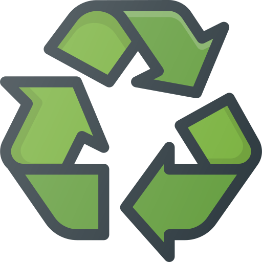
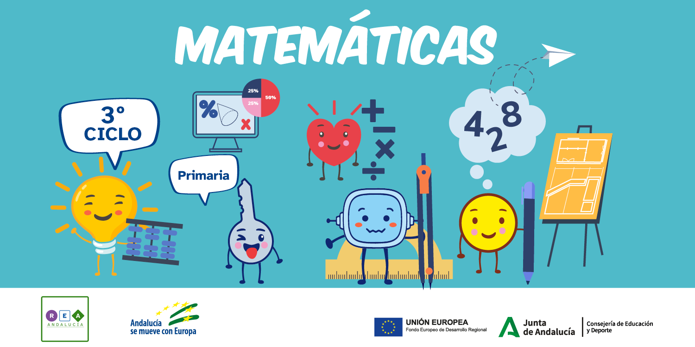

Diccionario Lectura Facilitada
Aprendiz
Definición:
Alguien que está aprendiendo con la ayuda de una persona experta.
Ejemplo:
En el taller de alfarería había aprendices con muchas ganas de aprender.
Artesanía
Definición:
Habilidad para fabricar objetos utilizando las manos y herramientas sencillas.
Ejemplo:
Fuimos de excursión a un taller de artesanía. Allí se fabricaban juguetes de madera.
Boceto
Definición:
Borrador o esbozo de los rasgos principales de un dibujo, idea o proyecto.
Ejemplo:
Resultó de gran ayuda elaborar un boceto de nuestro proyecto.
Cuaderno de campo
Definición:
Cuaderno pequeño y fácil de transportar. Sirve para tomar notas y registrar observaciones.
Ejemplo:
Durante la excursión al jardín botánico usamos un cuaderno de campo hecho con material reciclado. En el cuaderno guardamos diferentes tipos de hojas.
Equivalente
Definición:
Que tiene el mismo valor.
Ejemplo:
Media hora es equivalente a dos cuartos de hora.
Exposición
Definición:
Explicación de un tema de forma oral.
Ejemplo:
Realizamos una exposición en grupo de nuestro trabajo sobre las fracciones.
Fracción
Definición:
División o participación de la unidad en partes iguales.
Ejemplo:
La fracción ⅜ representa las porciones de pizza que se han comido.
Número primo
Definición:
Número que solo es divisible por 1 y por sí mismo. Los primeros números primos son: 2, 3, 5, 7, 11, 13, 17, 19, 23 y 29.
Ejemplo:
Para reducir fracciones uso los números primos.
Producto
Definición:
Multiplicación.
Ejemplo:
La maestra nos explicó como calcular el producto de dos números.
Reciclar
Definición:
Volver a utilizar materiales desechados.
Ejemplo:
En clase usamos un contenedor sólo de papel para poder reciclarlo.
Tangram
Definición:
Juego de tipo rompecabezas formado por 7 piezas de distintos colores que unidas forman un cuadrado y con el que puedes pormar multitud de figuras.
Ejemplo:
Logré formar un pez con las piezas del tangram.
Tóxico
 Definición:
Definición:
Producto químico que es venenoso o causa daños.
Ejemplo:
Debemos tener cuidado con el pegamento porque es un producto tóxico.
